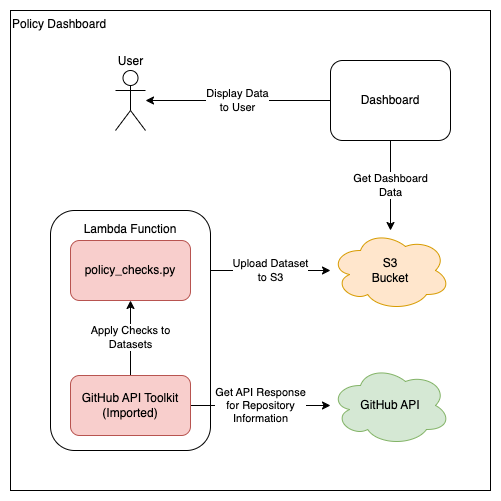

GitHub Policy Dashboard
Overview
This project contains a dashboard to monitor ONSDigital's compliance with ONS' GitHub Usage Policy. The dashboard interacts with various GitHub RESTful API endpoints to query each repository with a series of checks that align to aspects of the policy.
The dashboard is written in Python and uses Streamlit to produce a quick, easy and responsive UI. This project also makes use of a library called Plotly to produce high quality and interactive graphs.
Please Note: This project is a Proof of concept and may not comply with Civil Service/ONS best practices. This tool is only being used by a limited number of users.
Techstack Overview
Streamlit
Streamlit is a powerful web framework which promotes creating apps quickly and without the need of any frontend writing. This makes Streamlit well suited to the project due to the speed of development and heavy data focus. Streamlit also promotes interactivity within its apps which is crucial when making a dashboard as you want users to be able to play with the data to get the most from it. This project has been used as a proof of concept for Streamlit, testing its capabilities and potential for future projects. A small drawback is Streamlit's potential lack of accessibility. This project hasn't been accessibility tested but, due to its limited target audience, is still fit for purpose. Another limitation of the tool is its ability to be customised to look and feel like an ONS product. Streamlit offers customisation within its colour scheme and allows logos to be added, however it will still look like a Streamlit application.
Plotly
Plotly is a graphing library used within the project. Plotly was chosen because of its high interactivity, ability to export and general ease of use alongside Streamlit. Other libraries, such as Matplotlib, were trialed alongside Plotly during early development. It was found that Plotly just generally suited Streamlit's feel and focus on interactivity, which is why it was chosen. Another advantage of Plotly was its incorporation with Dash, a dashboarding tool built on top of the Flask framework. This means that if Dash was to be used in the future (perhaps to onboard a dashboard onto the ONS Design System), we'd already have some knowledge on how to use it.
Architecture Overview

This project uses 4 major components:
- The Dashboard
- The Lambda Function
- The Policy Checks (policy_checks.py)
- The GitHub API Toolkit (stored in another repository - Repository Link)
The Dashboard
This component displays the data back to the user. The dashboard will gather all of the data from an S3 bucket.
The Lambda Function
This component is responsible for collecting and maintaining the data from GitHub. The function collects information from the GitHub API through the use of the GitHub API Toolkit, applies a series of checks to the responses using policy_checks.py and then stores the information within an S3 bucket.
The Policy Checks
This component contains all the business logic to query the data retrieved from GitHub. The script also contains the logic to retrieve the data using the toolkit. Each policy check is written in its own function, and should return true if the check is failed/breaks policy.
The GitHub API Toolkit
This component is an imported library which is shared across multiple GitHub tools. The toolkit allows applications to make authenticated requests to the GitHub API. It is imported and used in the Lambda function.
High Level Data Overview
The dashboard's dataset can be divided into 3 parts:
- Repository Checks
- Secret Scanning Alerts
- Dependabot Alerts
Each part gets created by the Lambda function and stored in an S3 bucket for the dashboard to retrieve.
Repository Checks
General Data Structure
This section of the dataset gets stored in repositories.json. It contains a list of repositories with information about them. The information for each repository includes:
- Repository Name
- Repository Type (i.e public, private or internal)
- Repository GitHub Link
- Statuses of each policy compliance check
JSON Skeleton:
{
"name": <string>,
"type": <string>,
"url": <string>,
"checklist": {
"inactive": <bool>,
"unprotected_branches": <bool>,
"unsigned_commits": <bool>,
"readme_missing": <bool>,
"license_missing": <bool>,
"pirr_missing": <bool>,
"gitignore_missing": <bool>,
"external_pr": <bool>,
"breaks_naming_convention": <bool>,
"secret_scanning_disabled": <bool>,
"dependabot_disabled": <bool>
}
}
JSON Example:
{
"name": "github-policy-dashboard",
"type": "public",
"url": "https://github.com/ONS-Innovation/github-policy-dashboard",
"checklist": {
"inactive": false,
"unprotected_branches": false,
"unsigned_commits": false,
"readme_missing": false,
"license_missing": true,
"pirr_missing": false,
"gitignore_missing": false,
"external_pr": true,
"breaks_naming_convention": false,
"secret_scanning_disabled": false,
"dependabot_disabled": false
}
}
Policy Compliance Checks
Existing Checks
Repositories currently have 11 different checks:
| Check Name | Description |
|---|---|
| Inactive | The repository has not been updated in the last year. |
| Unprotected Branches | The repository has unprotected branches. |
| Unsigned Commits | One of the last 15 commits to this repository is unsigned. |
| Readme Missing | The repository does not have a README file. |
| License Missing | The repository does not have a LICENSE file (Public Only). |
| PIRR Missing | The repository does not have a PIRR file (Private/Internal Only). |
| Gitignore Missing | The repository does not have a .gitignore file. |
| External PR | The repository has a pull request from a user which isn't a member of the organisation. |
| Breaks Naming Conventions | The repository name does not follow ONS naming convention (No Capitals, Special Characters or Spaces). |
| Secret Scanning Disabled | The repository does not have secret scanning enabled (Public Only due to GitHub Advanced Security). |
| Dependabot Disabled | The repository does not have dependabot enabled. |
Rulemap
Compliance checks use a JSON file called rulemap.json to add some extra information about each check.
JSON Skeleton:
[
{
"name": <string>,
"description": <string>,
"is_security_rule": <bool>,
"is_policy_rule": <bool>
},
...
]
Each rulemap element contains:
- the name of the check
- This must match the name used in
repo_infowithin./aws_lambda/policy_checks.py>get_repository_data().
- This must match the name used in
- a description of the check
- This gets displayed to the end user of the dashboard.
- whether the check is part of the security preset
- If true, when the security preset button is clicked, the rule will be selected within the dropdown.
- whether the check is part of the policy preset
- If true, when the policy preset button is clicked, the rule will be selected within the dropdown.
JSON Example:
The follow defines the External PR rule which is only part of the security preset.
[
...
{
"name": "external_pr",
"description": "The repository has a pull request from a user which isn't a member of the organisation.",
"is_security_rule": true,
"is_policy_rule": false
},
...
]
Adding New Checks
To add a new change:
- Insert information about the new check into
rulemap.json.
i.e: for a check that checks if a repository is public
[
...
{
"name": "dependabot_disabled",
"description": "The repository does not have dependabot enabled.",
"is_security_rule": true,
"is_policy_rule": true
},
{
"name": "repository_public",
"description": "The repository is public",
"is_security_rule": true,
"is_policy_rule": false
}
]
-
Add a function for the check into
./aws_lambda/policy_checks.py. -
In
./aws_lambda/policy_checks.pythere is a function calledget_repository_data().
Within this function, edit repo_info to include the new check.
i.e:
Before:
repo_info = {
"name": repo["name"],
"type": repo["visibility"],
"url": repo["html_url"],
"checklist": {
"inactive": check_inactive(repo),
"unprotected_branches": check_branch_protection(repo["branches_url"].replace("{/branch}", ""), gh),
"unsigned_commits": check_signed_commits(repo["commits_url"].replace("{/sha}", ""), gh),
"readme_missing": check_file_exists(repo["contents_url"], gh, ["README.md", "readme.md", "docs/README.md", "docs/readme.md"]),
"license_missing": check_file_exists(repo["contents_url"], gh, ["LICENSE.md", "LICENSE"]),
"pirr_missing": check_file_exists(repo["contents_url"], gh, ["PIRR.md"]),
"gitignore_missing": check_file_exists(repo["contents_url"], gh, [".gitignore"]),
"external_pr": check_external_pr(repo["pulls_url"].replace("{/number}", ""), repo["full_name"], gh),
"breaks_naming_convention": check_breaks_naming(repo["name"]),
"secret_scanning_disabled": check_secret_scanning_enabled(repo),
"dependabot_disabled": check_dependabot_enabled(gh, repo["url"])
}
}
With new check:
repo_info = {
"name": repo["name"],
"type": repo["visibility"],
"url": repo["html_url"],
"checklist": {
"inactive": check_inactive(repo),
"unprotected_branches": check_branch_protection(repo["branches_url"].replace("{/branch}", ""), gh),
"unsigned_commits": check_signed_commits(repo["commits_url"].replace("{/sha}", ""), gh),
"readme_missing": check_file_exists(repo["contents_url"], gh, ["README.md", "readme.md", "docs/README.md", "docs/readme.md"]),
"license_missing": check_file_exists(repo["contents_url"], gh, ["LICENSE.md", "LICENSE"]),
"pirr_missing": check_file_exists(repo["contents_url"], gh, ["PIRR.md"]),
"gitignore_missing": check_file_exists(repo["contents_url"], gh, [".gitignore"]),
"external_pr": check_external_pr(repo["pulls_url"].replace("{/number}", ""), repo["full_name"], gh),
"breaks_naming_convention": check_breaks_naming(repo["name"]),
"secret_scanning_disabled": check_secret_scanning_enabled(repo),
"dependabot_disabled": check_dependabot_enabled(gh, repo["url"]),
"repository_public": check_repository_public(gh, repo["visibility"])
}
}
Please Note: The key for the attrubute withing checklist must match the name used within rulemap.json.
A new check should now be added.
Secret Scanning Alerts
This section of the dataset gets stored in secret_scanning.json. It contains a list of secret scanning alerts, for the organisation, which have been open for more than 5 days.
Please note: The 5 day threashold is derrived from ONS' GitHub Usage Policy, clause 6.2.1.
Each element contains the following:
- Repository Name
- Repository Type (i.e public, private or internal)
- Alert Information (formatted:
- ) - Repository GitHub Link
JSON Skeleton:
JSON Example:
{
"repo": "github-policy-dashboard",
"type": "public",
"secret": "Google API Key - <key>",
"link": "https://github.com/ONS-Innovation/github-policy-dashboard"
}
Dependabot Checks
This section of the dataset gets stored in dependabot.json. It contains a list of dependabot alerts for the organisation.
Dependabot Alerts are picked up based on the following:
- Critical alerts open more than 5 days
- High alerts open more than 15 days
- Medium alerts open more than 60 days
- Low alerts open more than 90 days
Please note: These are derived from ONS' GitHub Usage Policy, clause 6.2.2.
Each element contains the following:
- Repository Name
- Repository Type (i.e public, private or internal)
- Dependency Name (i.e a Python package such as Boto3)
- Advisory
- Alert Severity (i.e critical or high)
- Number of Days Open
- Repository GitHub Link
JSON Skeleton:
{
"repo": <string>,
"type": <string>,
"dependency": <string>,
"advisory": <string>,
"severity": <string>,
"days_open": <int>,
"link": <string>
}
JSON Example:
{
"repo": "github-policy-dashboard",
"type": "public",
"dependency": "Werkzeug",
"advisory": "Werkzeug debugger vulnerable to remote execution when interacting with attacker controlled domain",
"severity": "high",
"days_open": 77,
"link": "https://github.com/ONS-Innovation/github-policy-dashboard/security/dependabot/7"
}
Getting Started
To setup and use the project, please refer to the READMEs placed within each module.